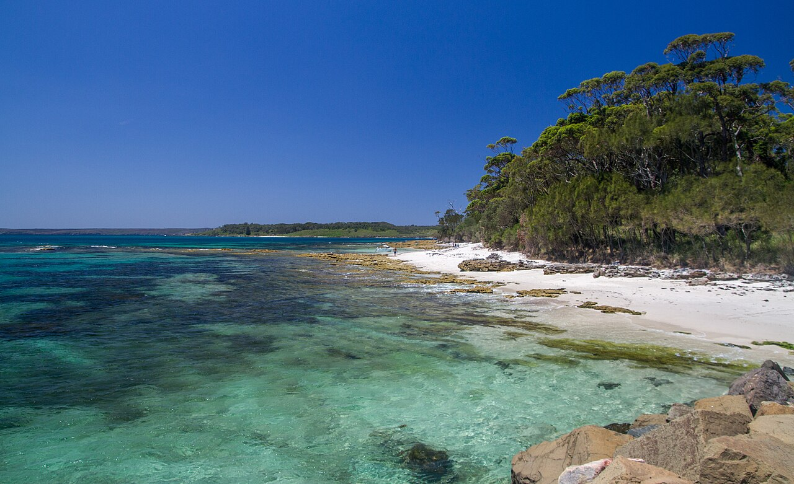

Jervis Bay from Huskisson · 5-day family itinerary
About three hours’ drive south of Sydney, then four nights in Huskisson on Jervis Bay. Short beach walks, a museum and a dolphin cruise for a nine-year-old and a five-year-old, and two days in Booderee National Park, where the entry station is closed but the vehicle pass is still checked on your dashboard.

Photo: Maksym Kozlenko, Murrays Beach, Booderee National Park, CC BY-SA 4.0, via Wikimedia Commons.

Checked before you commit
This illustrative route drives from Sydney to Huskisson and stays four nights. Booderee National Park pages for park passes, the pass FAQ, the entry station closure and traffic changes, getting here, staying safe, beaches, walks, the Botanic Gardens and Cape St George Lighthouse, Parks Australia’s booth closure notice, NSW National Parks and Visit NSW pages for the White Sands Walk, Shoalhaven Tourism, the Jervis Bay Maritime Museum and Jervis Bay Wild were read on 5 November 2026. Nothing was booked.
One drive in, one drive out, and one base. Huskisson is on the bay, the White Sands Walk starts in Vincentia, and Booderee is on the southern headland. The two park days are Day 2 and Day 4, so each needs its own one-day vehicle pass, and the cruise day between them doesn’t.
Walks of 300 m to 2.5 km, most of them graded 2 by Booderee, and one 2.5 km loop graded 3 by NSW National Parks for short, steep hills. Moderate day pace fills a morning and an afternoon slot, with lunch and dinner. Nothing runs after dark.
We didn’t check accommodation rates or availability, or cruise times, prices or availability. Booderee passes are bought from Parks Australia, not through Alfred. A booking-hub link is intent only. It doesn’t hold a room, a cruise seat or a park pass.
Planning boundary: dates are illustrative; the worked example runs Monday 16 to Friday 20 November 2026. Booderee’s notices of 9 October 2026 say the entry station is closed and rangers may ask to see a valid pass. Its park passes page still says you can buy a pass at the entry station, so we follow the newer notices.
Booderee also says the Iluka Beach day use area and beach staircase are closed for repairs, that H5 bird flu has been detected in the park, and that renewal works are underway in the rainforest section of the Botanic Gardens. Alfred doesn’t check park passes, closures or tides. Book opens a partner checkout; it doesn’t prove a booking.
Route and family-coordination brief
Party: two adults, one nine-year-old and one five-year-old, living in Sydney. Base: four nights in Huskisson. Pace: moderate, a morning and an afternoon slot a day. Budget input: Mid Range.
Getting there: Booderee says the park is at Jervis Bay, on the NSW south coast between Nowra and Ulladulla, about three hours’ drive from Sydney or Canberra. Jervis Bay Wild gives 2.5 hours from Sydney to Huskisson. Booderee says you can also take a train from Sydney to Bomaderry (Nowra), then a bus to Huskisson or Vincentia, but this plan uses a car for the park days.
Pass rule: Booderee says you need a park pass, and lists a one-day vehicle pass at A$20, a concession pass at A$10 (for Australian aged or disability pensioners, their carers, TPI card holders and veterans), A$80 for one year and A$110 for two. Display the printed pass on the dashboard or windscreen with the QR code visible. Walkers and cyclists enter free, and camping bookings include entry.
No-pass rule: with the entry station closed, Booderee says to buy online before arriving, or at the Booderee Visitor Centre or its mobile van at the Jervis Bay Supermarket on Village Road. Parks Australia says compliance officers patrol the park, and that WiFi at Green Patch is strong enough to buy a pass online. Booderee says mobile coverage elsewhere in the park is very limited.
Water and wildlife rule: Booderee says none of its beaches are supervised by lifeguards and children must be supervised at all times. Take extreme care near cliffs and rock platforms, and never turn your back to the ocean. Rock-platform plants and animals are protected. Don’t feed wildlife, and drive carefully at dawn and dusk. Don’t touch sick or dead birds; report them on 1800 675 888.
Left out: Steamers Beach, which ends in a steep flight of stairs, Iluka, which is closed for repairs, Cave Beach, camping, boating and dive tours. Hyams Beach is reached on foot from Greenfield Beach, because Shoalhaven Tourism says the village has very limited parking and is often parked out in busy periods.
Day 1 — Drive down, maritime museum, mangrove boardwalk
Before you leave Sydney, buy the Booderee vehicle passes online and print them at home. This plan has two park days, so two one-day passes at A$20 each; check the pass date and terms at checkout, which we didn’t open. Booderee says to display the printed pass on the dashboard or windscreen with the QR code visible. Then drive south. Booderee gives about three hours from Sydney to the park, and Jervis Bay Wild gives 2.5 hours to Huskisson.
After lunch in Huskisson, walk to the Jervis Bay Maritime Museum, Woollamia Road and Dent Street. The museum lists itself as open daily 10 am to 4 pm, closed Christmas Day, with entry at A$14 adult and A$12.50 concession, and children under 16 free with an adult. It says it doesn’t accept cash. The Jervis Bay Visitor Information Centre is inside.
Shoalhaven Tourism says the museum has the Lady Denman ferry, which once crossed Sydney Harbour, and easy access to the Mangrove Boardwalk along Currambene Creek, which it describes as wheelchair and pram friendly. Then check in.
Fallback: if traffic is slow, skip the museum today and do it on Day 5 before the drive home. Nothing on Day 1 is booked except your bed.
Live-check: your accommodation booking; Booderee’s news and alerts page; the Bureau of Meteorology forecast.
Day 2 — Booderee: Murrays Beach, Governors Head, the Botanic Gardens
Drive south into Booderee with the printed Day 2 pass on the dashboard. Booderee says the entry station is closed and rangers may ask to see a valid pass. Its 9 October 2026 traffic notice diverts inbound traffic through the visitor car park, using the two left lanes, and asks visitors to allow extra time.
Booderee says Murrays Beach is a five-minute drive from the Visitor Centre. From the car park, it lists Murrays Beach at 300 m, five minutes, and Governors Head lookout at 1.1 km, 20 minutes, both grade 2. The lookout faces Bowen Island, home to the park’s little penguin colony. Swim at Murrays afterwards, close to the five-year-old: Booderee says no beach in the park has lifeguards.
Picnic, then drive to the Booderee Botanic Gardens, which Booderee says are the only Aboriginal-owned botanic gardens in Australia. Entry is included in the park pass. From October to April, it lists the gardens as open from 8 am, closing 5 pm on weekdays. Walk the trail around Lake McKenzie, a freshwater wetland. Booderee says many paths suit prams and assisted wheelchair use.
Fallback: if the rainforest section is closed for the renewal works Booderee announced on 29 September 2026, ask a ranger which paths are open and stay on the lawns and the Lake McKenzie trail.
Live-check: Booderee’s news and alerts page; the Botanic Gardens hours; tomorrow’s Jervis Bay Wild departure time.
Day 3 — White Sands Walk to Hyams Beach, dolphin cruise
Drive to the Greenfield Beach picnic area in Vincentia. Visit NSW says pedestrian access opens off the cul-de-sac at the end of Elizabeth Drive. NSW National Parks lists the White Sands Walk and Scribbly Gum track as a 2.5 km loop, 30 minutes to 1.5 hours, grade 3, and says the Scribbly Gum track is steeper with more steps. Bring hats, sunscreen and water.
Visit NSW says the walk passes Chinamans Beach and ends at Hyams Beach. Shoalhaven Tourism says Hyams Beach village has very limited parking and is often parked out, and recommends parking at Greenfield Beach and walking. The walk is in Jervis Bay National Park, which NSW National Parks runs; it isn’t part of Booderee. No dogs and no bicycles on the track.
Back in Huskisson, take a dolphin cruise. Jervis Bay Wild lists a 1.5-hour dolphin cruise all year, with times that vary with the tide, and asks you to check in 30 minutes before at the vessel, on the public wharf near Fishermens Wharf Restaurant. In summer it offers a boom net on some departures. We didn’t see a price on the page we read; check it when you book.
Fallback: if the wind is up and the cruise doesn’t run, swap Day 3 and Day 5 and walk the Huskisson foreshore instead.
Live-check: the cruise departure time; the NSW National Parks page for Jervis Bay National Park, which says the park may close in poor weather or fire danger.
Day 4 — Booderee: Green Patch, Bristol Point, Cape St George Lighthouse
Day 4 pass on the dashboard, then drive to Green Patch. Booderee lists free electric barbecues and amenities, a beach five minutes’ walk from the car park, and paths where children can ride bikes down to the beach. If you arrive without a pass, Parks Australia says WiFi at Green Patch is strong enough to buy one online.
Walk the Green Patch to Bristol Point loop: Booderee lists 2 km, one hour, grade 2, best when the tide is low, along the rock platform and back through blackbutt forest. For the five-year-old, the Telegraph Creek Nature Trail from the north end of the car park is also 2 km and grade 2, with seats along the way.
Lunch at Green Patch, then drive to Cape St George Lighthouse, which Booderee puts 15 minutes away at the end of Stoney Creek Road. It says Stony Creek Road is unsealed but doesn’t need a 4WD. The lighthouse was built in 1860 and demolished by the Navy in 1922. A short trail leads to a viewing platform. Booderee says the southern whale migration can bring whales close in spring.
Fallback: if it is wet, skip the unsealed road and spend the afternoon on the Green Patch lawns and beach.
Live-check: the tide for the Bristol Point loop; Booderee’s alerts for closures; fire danger.
Day 5 — Huskisson morning, drive home
Check out. Shoalhaven Tourism describes the Round the Bay Walk, for walking or riding, with picnic areas and beach access along the way; walk as far as the five-year-old wants, then turn back. If the museum was skipped on Day 1, it opens at 10 am.
Lunch in Huskisson, then drive home to Sydney.
Fallback: if the weather is poor, go straight home after breakfast.
Live-check: traffic on the drive north; the Bureau of Meteorology forecast.
Planning notes
Dates are illustrative. At decision time, recheck Booderee’s news and alerts, the park passes page, the Botanic Gardens hours and works notice, the Jervis Bay Wild departure times and your accommodation booking. A travelling profile is required, and the adults, children and ages Alfred plans for come from the travellers on that profile.
On web Lets Go, Holiday takes origin, destination, dates, a budget step and a day pace, then Plan my trip queues the itinerary. Moderate day pace fills a morning and an afternoon slot, with lunch and dinner. The Estimated costs bar, when it appears, is a rounded median of flight-and-hotel packages, so it isn’t a useful number for a family driving from Sydney.
While the trip is still Planning, you can keep or change the hotel and then the flights Alfred picked. We did not test whether city search offers Huskisson or Jervis Bay, what Alfred plans for flights on a trip you drive, or whether Alfred’s hotel choices include places in Huskisson.
Once the trip is ACTIVE, you can edit an item’s title, times, location and notes, so “Booderee; printed pass on the dashboard, QR up; WiFi at Green Patch if needed; no lifeguards” can sit on the card. In Hey Alfred you can ask to swap two full days, and you confirm before it is applied. Book opens a partner checkout. It doesn’t buy a Booderee pass.
Plan a trip
Start with your people, dates and pace, then review the editable plan before booking.
Plan a trip